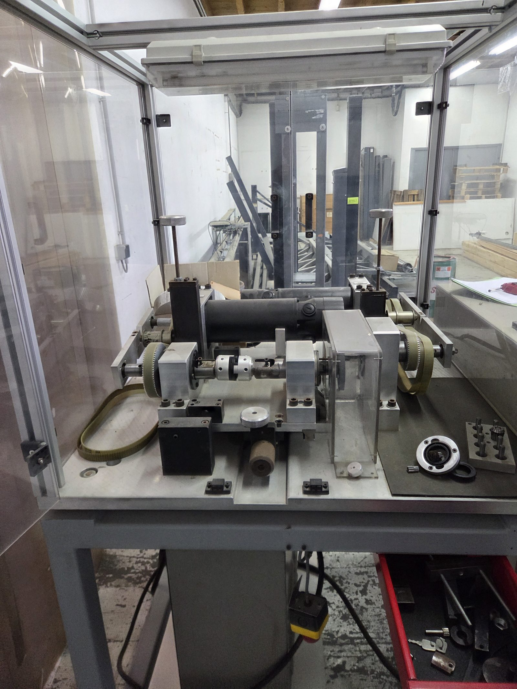

Avant l’essai
Identifier les matériaux et la géométrie. Photographier ou mesurer l’état initial des dents.
BANC D’ESSAI DÉVELOPPÉ EN 1997
Suivre le mouvement des moteurs jusqu’aux dents. Comprendre comment le banc met les engrenages à l’épreuve.
Explorer le fonctionnement2motorisations
0–125 mmdécalage annoncé des axes

01 / LE PRINCIPE
Une machine électrique entraîne les pièces. Une seconde peut opposer une charge. Les dents transmettent alors un effort à chaque passage dans la zone de contact.
Schéma simplifié — valeurs relatives, aucune mesure du banc. L’affectation exacte des rôles d’entraînement et de charge à M1 ou M2 reste à confirmer.
On serre les axes portant les roues d’essai dans les porte-pinces. Les deux pièces sont positionnées pour permettre leur contact.
Pourquoi deux moteurs ? Pour dissocier la mise en rotation et l’effort transmis. Une roue qui tourne presque à vide sollicite peu ses dents. Une charge résistante les fait travailler.
Pourquoi des courroies ? Elles relient les moteurs aux broches. Les poulies permettent d’adapter la transmission ; la zone d’essai se trouve entre les pièces montées sur les broches.
02 / LA MACHINE RÉELLE
Sélectionne un élément pour voir sa place dans le banc et comprendre sa fonction.
DEUX MACHINES ÉLECTRIQUES IDENTIQUES
Les cylindres noirs repérés M1 et M2 sont des servomoteurs à courant continu de la famille Parvex RX630E. Chaque moteur dispose de son variateur et d’un retour tachymétrique pour la vitesse.
Le descriptif distingue un ensemble M1 fixe et un ensemble M2 mobile. Cela ne suffit pas à attribuer avec certitude le rôle moteur ou frein à chacun.
03 / LES RÉGLAGES
La position des axes définit la géométrie du montage. Les poulies adaptent la vitesse et le couple disponibles aux broches.
POSITION DES AXES
Décalage transversal annoncé dans le descriptif. M1 est fixe ; l’ensemble M2 est mobile.
La cote b ne représente pas le jeu entre les dents. Ces valeurs documentaires ne constituent pas une vérification de la course ou de la précision du banc.
EFFET D’UN RAPPORT DE POULIES
vitesse relative à la broche
couple relatif disponible
À vitesse et couple moteur identiques, hors pertes. Les valeurs sont normalisées par rapport à une transmission 1:1. Elles ne donnent ni les rapports montés ni les capacités réelles du banc.
MONTAGES PRÉVUS PAR LE DESCRIPTIF
Dentures extérieures droites ou hélicoïdales · Dentures intérieures avec adaptateur · Cardan avec décalage a = 0
04 / VOIR LA MÉCANIQUE
Cette séquence de 17,6 secondes montre les poulies, les arbres et l’accouplement manipulés manuellement.
La vidéo montre la liaison mécanique. Elle ne démontre pas un essai motorisé sous charge. La version présentée est sans audio.
05 / COMPRENDRE L’USURE
Les contacts répétés entre les dents sollicitent leur surface. Pour comparer des dentures, les conditions de chaque essai doivent être définies et documentées.
Identifier les matériaux et la géométrie. Photographier ou mesurer l’état initial des dents.
Définir la vitesse, la charge, la durée et le cycle. Suivre les afficheurs et consigner les conditions.
Comparer les surfaces, dimensions ou profils. Rechercher une évolution de l’usure ou des dommages.
Les éléments disponibles ne montrent pas de mesure automatique de l’usure. La méthode de mesure et les critères d’acceptation doivent être définis pour chaque campagne.
06 / LES REPÈRES TECHNIQUES
| Famille moteur | Parvex RX630E · courant continu |
|---|---|
| Référence lue | RX630ER1100 |
| Tension indiquée | 134 V |
| Courant I₀ | 16 A |
| Couple M₀ à basse vitesse | 7,8 Nm |
| Vitesse nominale indiquée | 2 400 tr/min |
| Retour tachymétrique | 6 mV / (tr/min) |
M₀ et la vitesse nominale sont deux caractéristiques distinctes. On ne peut pas conclure que 7,8 Nm sont disponibles en continu à 2 400 tr/min. Le couple aux pièces dépend aussi des poulies et des pertes.
Analyse de 37 photographies prises le 9 avril 2026 et d’une vidéo de 17,6 secondes, croisées avec « Descriptif banc.docx » et « Banc usure denture.pptx ».
La présentation décrit les objectifs de remise en route et indique une partie électrique non testée au moment de sa rédaction. Cette visite explique le principe du banc ; elle ne valide pas sa remise en service.
Consulter les courbes constructeur Parvex RX ↗Les observations, les données documentaires et les hypothèses de fonctionnement sont distinguées dans les explications.